(see bottom for assigned readings and questions)
Monday, 23 October:
Interpretability: Overview, Limitations, & Challenges
Definition of Interpretability
- Interpretability in the context of artificial intelligence (AI) and machine learning refers to the extent to which a model’s decisions, predictions, or internal workings can be understood and explained by humans. It’s the degree to which a model’s behavior can be made transparent, comprehensible, and meaningful to users, stakeholders, or domain experts.
- In concept-based interpretability, the focus is on explaining the model’s decisions in terms of high-level concepts or features that make sense to humans. This approach seeks to relate model behavior to intuitive, domain-specific, or abstract concepts. For example, in a medical diagnosis model, concept-based interpretability might explain that a decision was made because certain symptoms or biomarkers were present.
- Mechanistic-based interpretability aims to provide a detailed understanding of how the model makes decisions. This approach delves into the inner workings of the model, explaining the role of individual features, weights, and computations. For instance, in a deep learning model, mechanistic interpretability might involve explaining the contributions of specific layers in the decision process.
Why is interpretability important?
Interpretability is important because it builds trust, aids in debugging, and is essential in applications where the consequences of AI decisions are significant, for example:
- Learn how the model makes the decision.
- Analyze whether there are biases or shortcuts that a model is taking during application.
- When dealing with human-in-the-loop systems, interpretability enables humans to work collaboratively with AI, leveraging their complementary strengths to achieve better outcomes.
Salient Explainers
 |
|
The main ideas of these approaches are:
|
 |
|
A salient map example by different methods (introduced above) of a bird. While the vanilla gradient method output is noisy, the other methods “improve” the map visually, and we can thus gradually see a ‘clearer’ pixel-level attribution influence which aligns with human understanding of the concept ‘bird’. It’s also important to note that none of these methods was evaluated in a quantitative way. It is also important to consider how much ones that incorporate the input directly are actually explaining the model. |
Saliency Map Demo
| 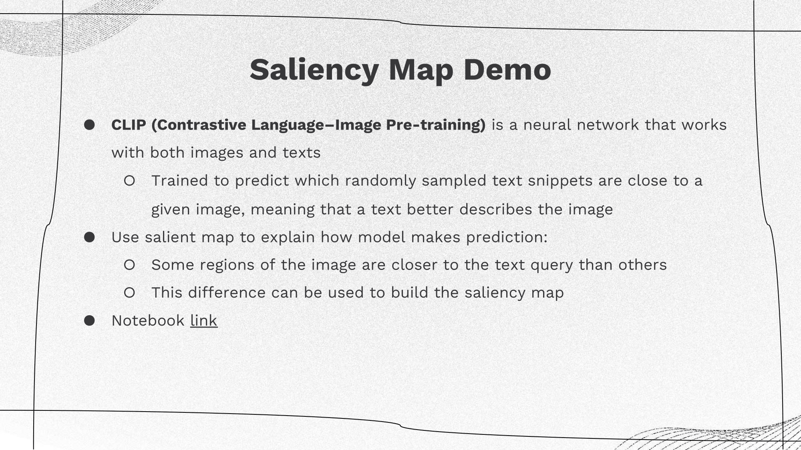 |
 |
|
Example: given an image and text prediction provided by the model, a saliency map highlights the most important features or regions within the image that the model uses to make decisions. These maps can help users understand the model's decision-making process, particularly in applications such as medical imaging or self-driving cars. To create the saliency map, randomly crop or mask parts of the image and compute the similarity between the cropped images and text. If the similarity value is positive, indicating the crop is closer to the query, it should be represented as a red region on the saliency map. Conversely, if the value is negative, it should be depicted as a blue region. |
Limitations of Salient Explainers
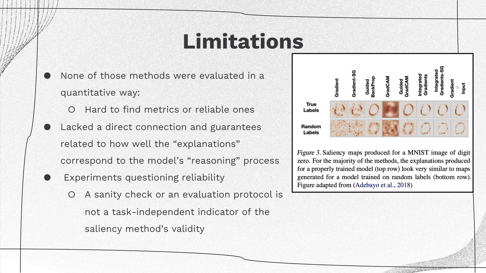
Combining Salient Explainers with Generative AI?
| 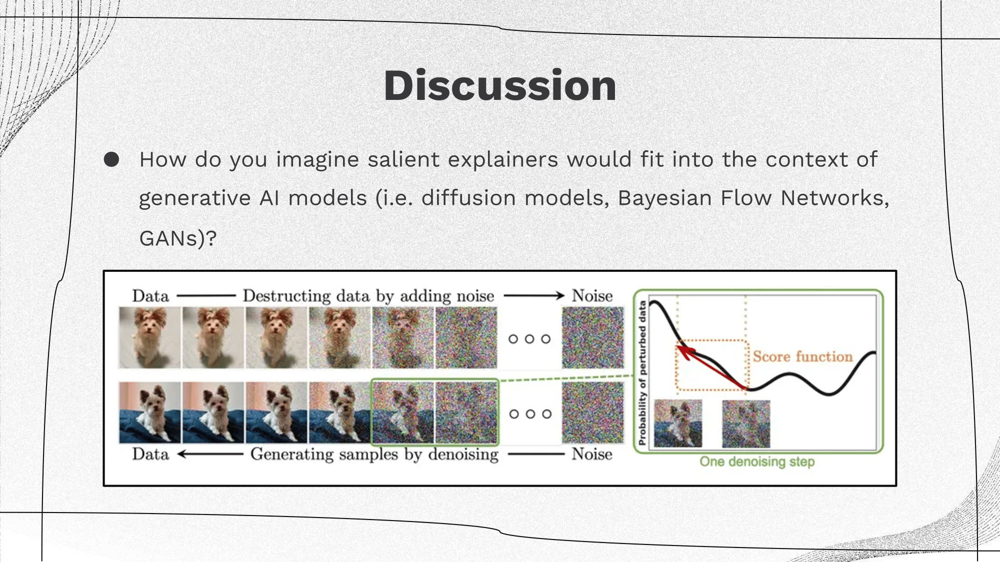 |
|
Attention Explainers
 |
|
Attention plays a pivotal role in numerous applications, particularly in Natural Language Processing (NLP). For instance, the choice of a specific word, along with the assigned weight, signifies a correlation between that weight and the decision made. In NLP, understanding which words or elements are emphasized, and to what extent (indicated by their respective weights), is crucial. This emphasis often sheds light on the correlation between the input data and the model's decision-making process. Attention-based explainers serve as valuable tools in dissecting and interpreting these correlations, offering insights into how decisions are derived in NLP models. |
Limitations of Attention: Attention is not Explanation
Jain and Wallace’s Attention is not Explanation, NAACL 2019
Sarah Wiegreffe, Yuval Pinter. Attention is not not Explanation. EMNLP, 2019.
 |
|
A recent study has cautioned against using attention weights to highlight input tokens “responsible for” model outputs and constructing just-so stories on this basis. The core argument of this work is that if alternative attention distributions exist that produce similar results to those obtained by the original model, then the original model’s attention scores cannot be reliably used to “faithfully” explain the model’s prediction. |
Further Discussion: Attention is not not Explanation
| 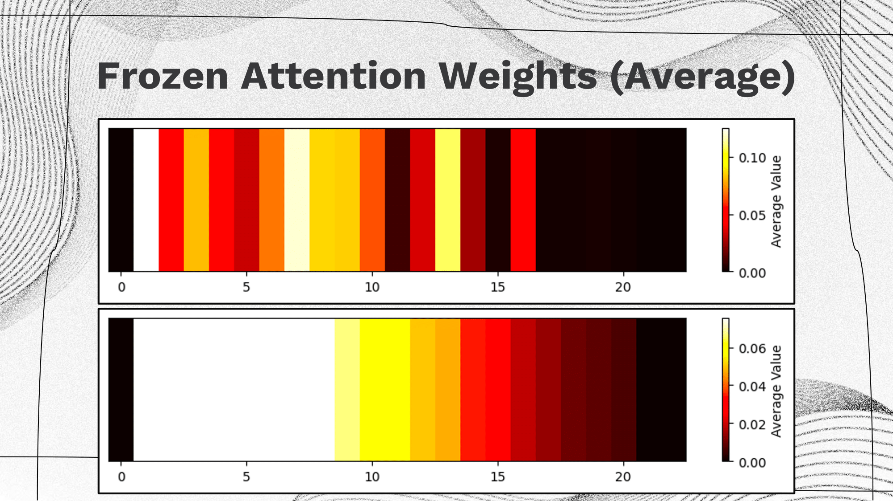 |
|
Visualization of the heatmap of the attention weights at different index for 2 methods introduced by the Attention is not not Explanation paper. The upper one is related to model with trained attention weights and the lower one is related to model with uniform frozen attention weights. Both figures show the average attention weights over the whole dataset. Clearly, the model with trained attention weights has a noisier heatmap which is due to the difference in the text content and the model with uniform frozen attention weights has a clearer pattern which only relates to the length of the text. |
 |
|
If attention was a necessary component for good performance, we would expect a large drop between the two rightmost columns (i.e. comparison of model with trained attention weights and frozen uniform attention weights). Somewhat surprisingly (although less surprising when one considers the evaluated tasks), for three of the classification tasks the attention layer appears to offer little to no improvement whatsoever. In these cases, the accuracies are near identical on 3 out of 5 datasets, and so attention plays no role in explanations if we don’t need it in our prediction. |
 |
|
The above table presents several insightful findings:
The evaluation of these results highlights a crucial aspect: the definition of an explanation. Although these attention weights potentially hold utility (as observed in various settings), their direct interpretation is not always straightforward. |
 |
|
The initial hypothesis (on the right) proposed that fluctuating attention confidence minimally affected the output. However, after employing pretrained attentions (on the left), it became evident that higher attention weights correspond to reduced variance. (In the visualization, the length of the bubble represents variance, with tighter bubbles indicating the ideal scenario. Colors denote positive/negative labels.) |
Discussion
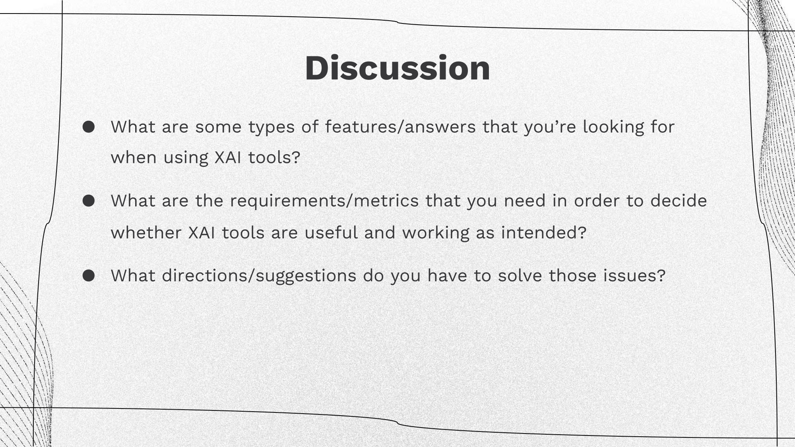
Group 1: Human interpretability features are essential. For instance, in the application of AI in drug design, an AI model alters a molecule from a non-drug variant to its drug counterpart. Presently, the predominant approach involves creating a black-box model that transforms one molecule into its drug form, contributing to a lack of credibility in the process. For example, a doctor unfamiliar with deep learning cannot comprehend the inner workings of the model that facilitates the conversion of regular molecules into drugs, making it challenging to ensure the safety, efficacy, and trustworthiness of the AI-driven drug design without transparent and interpretable models.
Group 2: A general observation we’ve noted is that the requirements or metrics for Explainable AI (XAI) significantly depend on the intended purpose of the tool. For instance, the explanations provided for AI researchers and end users are likely to differ due to their distinct focuses. On the other hand, there is a risk of amplifying confirmation bias if we anticipate XAI to explain phenomena in alignment with human beliefs. To truly understand why a model performs effectively, it might be necessary to set aside human biases and preconceived notions, enabling an unbiased exploration of how the model achieves its performance.
Group 3: Currently, there are still lots of difficulties and problems in using XAI tools in general. For example, methods such as LIME and SHAP always need a lot computation and don’t work well on complex large models. Besides, we lack ground-truth explanations and therefore, we don’t know whether the learned explanations are useful or not. Our suggestions for solving those problems and also issues mentioned by other groups are: 1) Approximating the complicate model to some simple model 2) Build self-explainable models 3) Combine different metrics and XAI tools.
Towards Provably Useful XAI
| 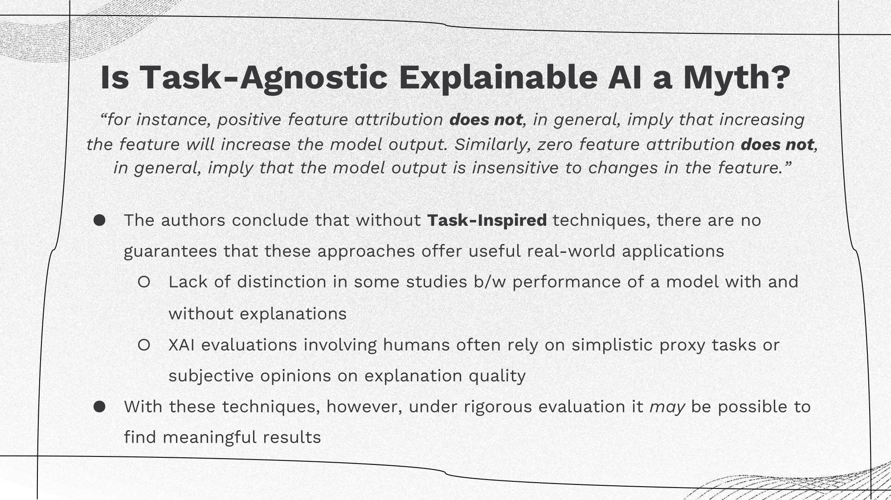 |
|
The critical point here underscores the necessity of task-specific techniques, which may seem self-explanatory—how can general principles apply without a specific context? Even then, this assumption is not necessarily guaranteed. One of the primary challenges between the current state of eXplainable Artificial Intelligence (XAI) and potentially valuable XAI methods is the absence of a method-task link. Ensuring the usability and reliability of an explanation in a particular task requires a deeper connection. This could either involve anchoring explanations in theory directly aligned with the task's requirements or creating task-inspired explanations and subsequently empirically evaluating them within the targeted application. |
Wednesday, 25 October: Mechanistic Interpretability
 |
|
Mechanistic Interpretability is the process of reverse-engineering neural networks into understandable computer programs. It is often motivated by the goal of ensuring a models' behavior is both predictable and safe (but unclear if it can ever achieve such a goal). |
Introduction: Mechanistic interpretability vs concept-based interpretability
| 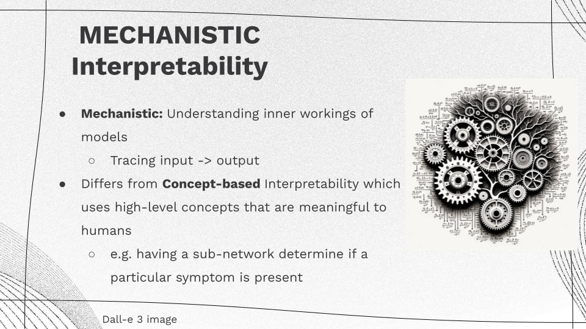 |
|
Softmax Linear Units (SoLU)
Nelson Elhage, Tristan Hume, Catherine Olsson, Neel Nanda, Tom Henighan, Scott Johnston, Sheer El Showk, Nicholas Joseph, Nova DasSarma, Ben Mann, and others (Anthropic AI). Softmax Linear Units. Transformers Circuit Thread, 2022. https://transformer-circuits.pub/2022/solu/index.html
Superposition Hypothesis
 |
|
Solutions to Superposition
| 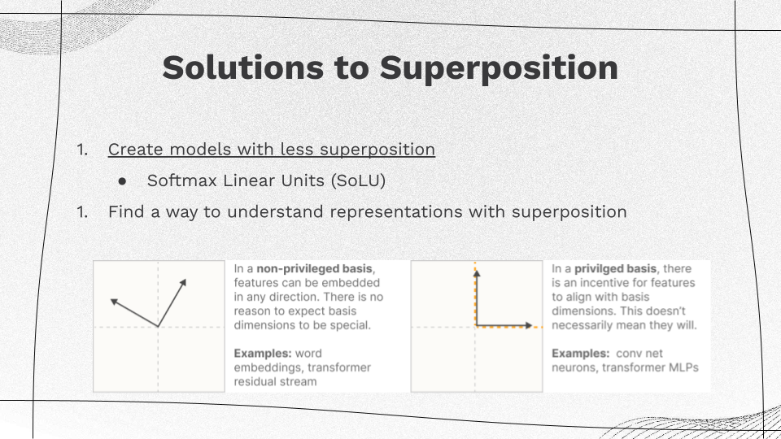 |
|
SoLU vs GeLU
 |
|
There are several ways SoLU is designed to reduce polysemanticity:
|
SoLU Motivating Examples
| 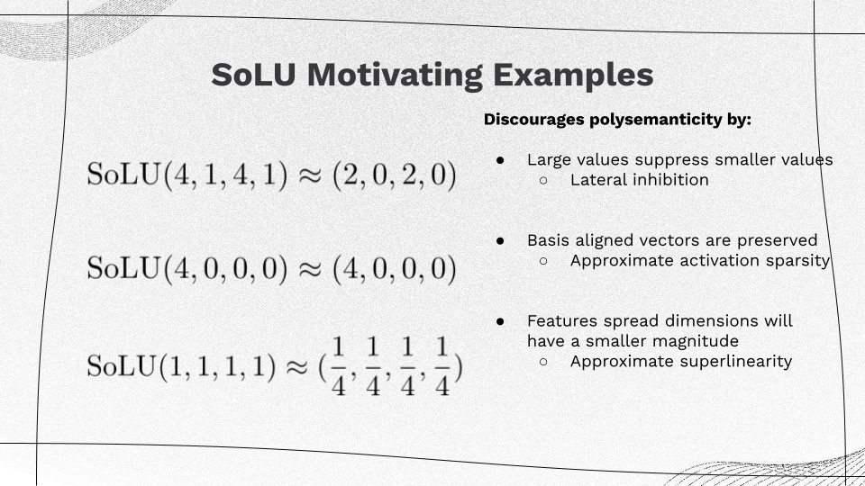 |
|
When SoLU is applied on a vector of large and small values (4, 1, 4, 1), the large values will suppress smaller values. Large basis aligned vectors e.g. (4, 0, 0, 0) are preserved. A feature spread across many dimensions (1, 1, 1, 1) will be suppressed to a smaller magnitude. |
Performance vs. Explainability
| 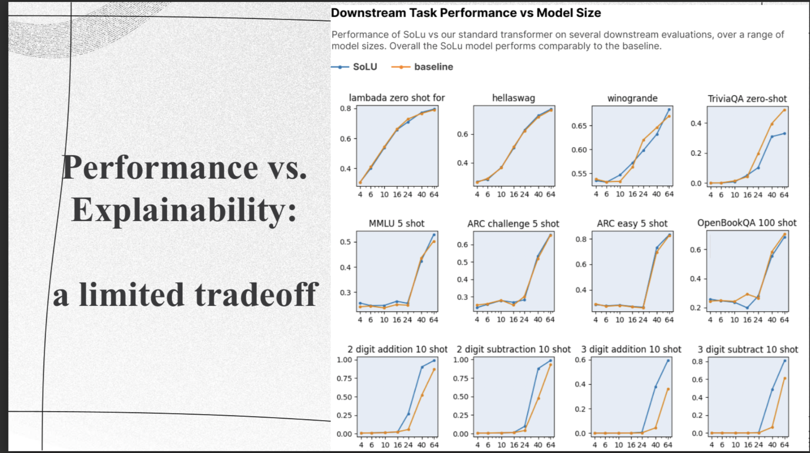 |
|
Although performance on overall tasks tends to align with the training set's general performance, it's important to note that this may not reveal shortcomings in specific tasks or areas. To ensure a comprehensive understanding, the researchers conducted various evaluations on representative tasks, corroborating the insights gained from the loss curves. They assessed their model's performance on a variety of datasets, including Lambada, OpenBookQA, ARC, HellaSwag, MMLU, TriviaQA, and arithmetic datasets, and the results are displayed in Figure 2. The authors observed that, overall, there were similar performance levels between the baseline and SoLU models across different model sizes. However, they did notice notable differences in a couple of tasks. For example, the SoLU model performed better on arithmetic tasks, while the baseline model outperformed on TriviaQA. Nevertheless, there wasn't a consistent trend favoring one model over the other across most tasks. |
Are SoLU Neurons Interpretable?
|
To check if a neuron is easy to understand at the first glance, the researchers had people (some of them were authors of the study) look at a set of text snippets. These snippets usually contained about 20 short paragraphs, and the focus was on words that the neuron put a large weight on. These important words were highlighted in various shades of red to show how much weight the neuron gave them. This made it easy for the evaluators to quickly go through the snippets and spot any common themes. You can see an example of what these evaluators saw in the figure. (Note that this experiment includes no control — humans are prone to finding patterns in randomness also.) |
Interpretability of Neurons in SoLU vs Baseline Transformer
| 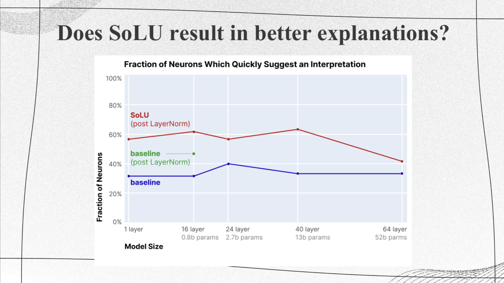 |
|
This shows the results of human experiments on interpretability of neurons in SoLU vs baseline transformer for various model sizes. The authors used transformers with different numbers of layers, from 1 to 64. The blue line shows the proportion of neurons in the baseline transformer that were marked as potentially having a clear interpretation across these different layer counts. The red line shows the same thing for the SoLU transformer. The green dot specifically represents the proportion of interpretable neurons in the 16-layer model that had an extra layer-norm but not SoLU. In general, for models with 1 to 40 layers, using SoLU increased the number of neurons that could be easily understood by about 25%. However, in the 64-layer model, the improvement was much smaller. |
LayerNorm Complications
| 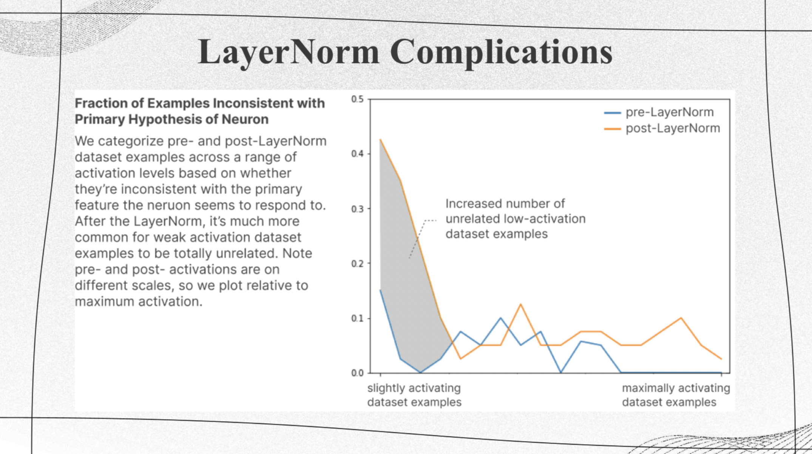 |
|
This figure shows the fraction of neurons inconsistent with primary hypothesis. We observe that generally with the increase of activating dataset samples, the fraction of inconsistent neurons decrease. And after layer normalization, inconsistent neurons increases. |
Class Activity: Identify Feature Mappings
 |
|
We can observe some interpretable features mappings from these highlighted patterns. For example, orange neuron represents the words of the form verb+ing, cyan neuron represents words with prefix 'sen'. The purple highlights are random, and no humans hallucinated an interpretation for them. |
Monosemanticity
Trenton Bricken, Adly Templeton, Joshua Batson, Brian Chen, Adam Jermyn, and others (Anthropic AI). Towards Monosemanticity: Decomposing Language Models With Dictionary Learning. Transformers Circuit Thread, 2023. https://transformer-circuits.pub/2023/monosemantic-features/index.html
 |
|
The authors use a weak dictionary learning algorithm called a sparse autoencoder to generate learned features from a trained model that offer a more monosemantic unit of analysis than the model's neurons themselves. |
Architectural Limitations
 |
|
The model framework for SoLU paper has an architectural limitation. It designed activation functions to make fewer neurons be activated for to make the model more interpretable, but this process push the model sparsity too much, which makes the neurons encouraged to to be polysematic. Here, a neuron is polysemantic if the neuron can represent more than one interpretable feature mapping. |
Model Overview
| 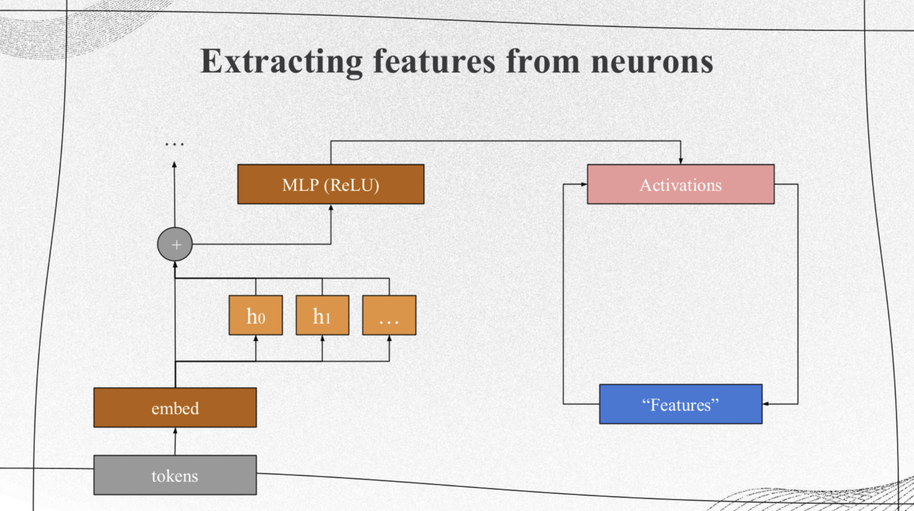 |
|
The purpose of this paper is to clearly demonstrate the effectiveness of a sparse autoencoder in achieving two main objectives: extracting understandable features from superposition and facilitating basic circuit analysis. Specifically, the authors achieve this by using a one-layer transformer with a 512-neuron MLP (Multi-Layer Perceptron) layer. They break down the activations of the MLP into features that are relatively easy to interpret by training sparse autoencoders on the MLP activations obtained from a massive dataset comprising 8 billion data points. These autoencoders have varying expansion factors, ranging from 1×(resulting in 512 features) to 256×(resulting in 131,072 features). |
Features as a Decomposition

The authors decompose the activation vector with the first equation, which is a combination of more general features which can be any direction. In the equation, $x_j$ is the activation vector for datapoint $j$, $f_i(x^j)$ is the activation of feature $i$, each $d_i$ is a unit vector in activation space called the direction of feature $i$, $b$ is the bias.
The Critetrion of Being a Good Decomposition
 |
|
This shows an example of a "good" feature decomposition. The criterion are:
|
Sparse Autoencoders
 |
|
Sparse autoencoders use several techniques and strategies to extract interpretable features from neural network activations:
|
The purpose of sparse autoencoders is to extract meaningful features from neural network activations. To avhice a good decomposition, where the features extracted should be interpretable and able to describe the activations' context requires the ability to describe activations, interpret downstream effects of changes, and cover a significant portion of functionality within the data.
Are these features “interpretable”
| 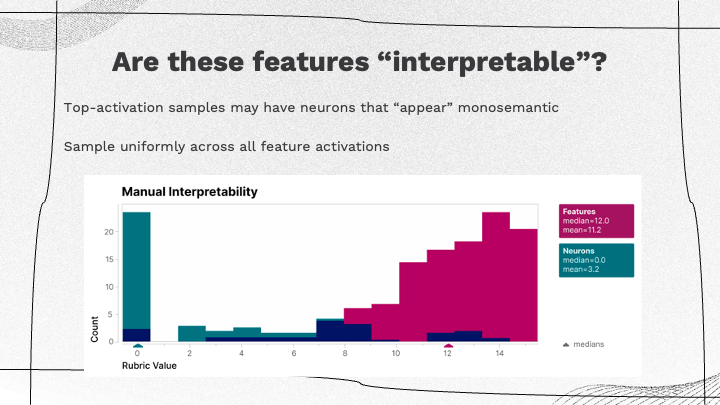 |
|
Feature Activation Sampling Bias: In previous evaluations, there was a bias due to just considering the top-activation neurons which might inaccurately appear monosemantic due to their higher activations. To mitigate this bias, the approach involves sampling uniformly across all possible activations for each given feature. Evaluation of Interpretable Features: The authors used an evaluation process where human-based assessments are used to determine the interpretability of the features extracted. The criteria for interpretability are based on the authors' distributed-based evaluation, where a score above eight is considered sufficiently interpretable. |
Automated Evaluation
 |
|
The authors used a larger language model to generate a text description of each feature. For the features from the sparse autoencoder, there is a higher correlation with human interpretations, with average correlation values reaching as high as 0.153 in some instances, and up to 0.7 in larger models. |
Group Discussions
| 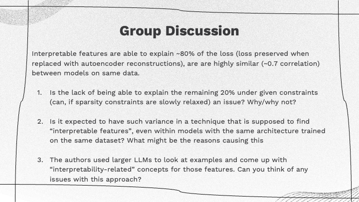 |
The sparse autoencoder technique in focus can explain up to 80% of the loss. This means that by replacing activated neurons with reconstructions, 80% of the original model’s loss can be accounted for without altering the model. Notably, there is a high correlation (Spearman correlation around 0.7) between independent features of two models sharing the same architecture but having different random initializations.
Considering these evaluation findings, the class divided into three groups to discuss specific questions related to the interpretability of features.
One group noted a common discrepancy between the expectations from language models and humans. Language models are often expected to perform at superhuman or domain expert levels, while their capabilities might align more closely with those of a standard human. The use of a general-purpose language model for features requiring domain expertise was seen as a potential issue, as the model’s interpretation might lack the required domain-specific knowledge.
The group also shared their discussion about the possibility that language models might ‘hallucinate’ interpretations for given features, possibly creating false correlations or interpretations that do not necessarily exist within the data. Human evaluators might also introduce subconscious biases or look for patterns without having the necessary domain expertise, potentially affecting the interpretability findings. Another key point they raised was about the intended audience for interpretability. They discussed that interpretability work from the language models might primarily target researchers, specifically computer science researchers who are involved in developing and assessing models, rather than end-users of these models in practical applications.
The second group highlighted the multifaceted nature of the variance observed in models designed to find interpretable features. It primarily attributed this variability to stochastic elements in the learning process, the order and sequence of data during training, and the diverse interpretations resulting from these variations, which may lead to equally interpretable yet different feature sets.
The final group emphasized the potential acceptability of the unexplained 20% in certain contexts, underscoring the value in correctly interpreting the majority of the content. Additionally, they noted the potential nuances within the unexplained portion, distinguishing between varying reasons for lack of interpretability within that portion.
Feature Splitting
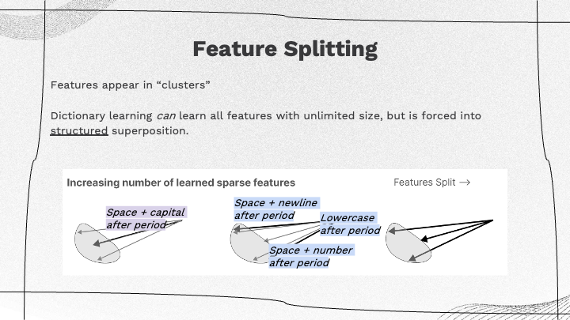

|
|
The training of three different versions of autoencoders with increasing sizes of the internal representation were described, leading to more sparsity in interpretable features. They analogized a dictionary learning algorithm to an unlimited number of interpretable features, Even with varied model semantics, a structured superposition of concepts emerges in the learning process. By feature clustering and splitting, this splitting of features leads to more fine-grained interpretations, where a single concept or feature might bifurcate into multiple similar but distinct interpretable features. These findings may have benefits beyond one-layer transformers, suggesting the possibility of applying this technique to larger transformers or models. |
Takeaways
| 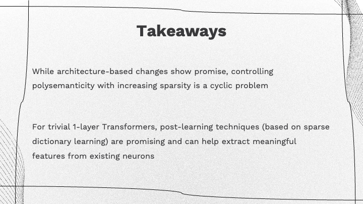 |
|
The summary underscores the potential and limitations of both architectural changes aimed at controlling polysemanticity and the potential for post-learning techniques, but so far only partially demonstrated for a simple 1-layer transformer. Post-learning interpretation seems more practical for now than adapting existing training techniques for interpretability, which would require larger changes to current practices. |
Readings and Discussions
Monday 23 October
Required Reading
- Alicja Chaszczewicz. Is Task-Agnostic Explainable AI a Myth?. arXiv, 2023. https://arxiv.org/pdf/2307.06963.pdf
Optional Readings
-
Robert Geirhos, Roland S. Zimmermann, Blair Bilodeau, Wieland Brendel, Been Kim. Don’t trust your eyes: on the (un)reliability of feature visualizations. arXiv, 2023. https://arxiv.org/pdf/2306.04719.pdf
-
Sarah Wiegreffe, Yuval Pinter. Attention is not not Explanation. EMNLP, 2019. https://arxiv.org/pdf/1908.04626.pdf (This is a response to Jain and Wallace’s Attention is not Explanation, NAACL 2019 paper, which sadly is not a response to any paper titled Attention is Explanation, but perhaps that is waiting to be written?)
Discussion Questions
-
Chaszczewicz highlights shared challenges in XAI development across different data types (i.e. image, textual, graph data) and explanation units (i.e. saliency, attention, graph-type explainers). What are some potential similarities or differences in addressing these issues?
-
In cases where models produce accurate results but lack transparency, should the lack of explainability be a significant concern? How should organizations/developers balance the tradeoffs between explainability and accuracy?
-
How can XAI tools could be used to improve adversarial attacks?
-
In Attention is not not Explanation, the authors dispute a previous paper’s definition of explanation. Whose view do you find most convincing and why?
Wednesday 25 October
Required Readings
- Nelson Elhage, Tristan Hume, Catherine Olsson, Neel Nanda, Tom Henighan, Scott Johnston, Sheer El Showk, Nicholas Joseph, Nova DasSarma, Ben Mann, and others (Anthropic AI). Softmax Linear Units. Transformers Circuit Thread, 2022. https://transformer-circuits.pub/2022/solu/index.html
- Trenton Bricken, Adly Templeton, Joshua Batson, Brian Chen, Adam Jermyn, and others (Anthropic AI). Towards Monosemanticity: Decomposing Language Models With Dictionary Learning. Transformers Circuit Thread, 2023. https://transformer-circuits.pub/2023/monosemantic-features/index.html
Discussion Questions
-
(Softmax Linear Units) Elhage et al. present the Superposition Hypothesis which argues that networks attempt to learn more features than the number of neurons in the networks. By delegating multiple features to a single node, interpreting the significance of the node becomes challenging. Do you believe this hypothesis based upon their explanation, or do you suspect there is some separate obstacle here, such as the counter-argument that nodes could represent standalone features that are difficult to infer but often obvious once discovered?
-
(Softmax Linear Units) Do you see any difference between SLU and ELU coupled with batch-norm/layer-norm? How does this relate to the reasons the LLM community shifted from ReLU (or variants like ELU) to GeLU?
-
(Towards Monosemanticity) Could the identification of these “interpretable” features could enable training (via distillation, or other ways) smaller models that still preserve interpretability?
-
(Towards Monosemanticity) Toying around with visualization seems to show a good identification of relevant positive tokens for concepts, but negative concepts do not seem to be very insightful. Try the explorer out for a few concepts and see if these observations align with what you see. What do you think might be happening here? Can it possibly be solved by changing the auto-encoder training pipeline, or possibly by involving structural changes like SLU? Are there other interesting elements or patterns you see?